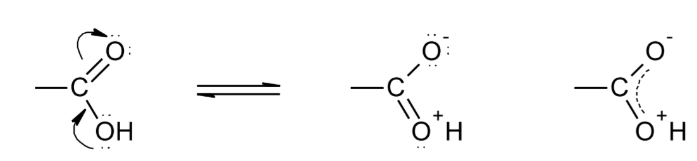
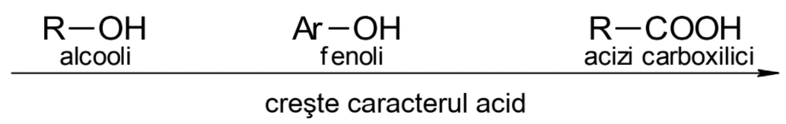
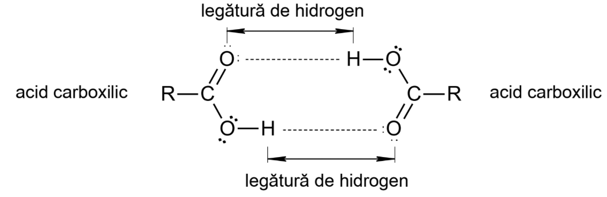

Compușii carboxilici se mai numesc și acizi carboxilici.
Definiție: Acizii carboxilici sunt compuși organici, care conțin în moleculă gruparea funcțională carboxil (–COOH ).
Formula generală a acizilor carboxilici este: R – COOH.
Formula generală pentru acizii:
Grupa carboxil are prioritate la numerotare, în fața legăturilor duble, triple și a celorlalte gupări învățate până acum, respectiv nitro (-NO2), halogeno (-X), hidroxil (-OH din alcooli și fenoli), amino (-NH2), carbonil (>C=O), ciano (-CN).
Gruparea carboxil este o grupare funcțională, trivalentă, plană, cu atomul de carbon hibridizat sp2 și formată dintr-o grupare carbonil și una hidroxil. Cele două grupări, datorită conjugării care apare între electronii neparticipanți ai atomului de oxigen a grupării –OH și electronii π ai grupei carbonil își pierd individualitatea, gruparea carbonil își pierde caracterul nesaturat, iar densitatea electronică a grupării –OH scade, aceasta mărindu-și aciditatea.
Grupa –OH din compușii carboxilici are un caracter acid mai accentuat comparativ cu grupările –OH din alcooli și fenoli.
Acizii carboxilici pot prezenta următoarele tipuri de izomerie: de catenă, de poziție, de funcțiune, geometrică și optică. Acizii sunt izomeri de funcțiune cu esterii, hidroxialdehidele, hidroxicetonele, aldoeterii și cetoeterii.
Acizii inferiori au miros înțepător și sunt lichizi, iar cei superiori, cei aromatici și cei dicarboxilici sunt solizi. Acidul formic și acidul acetic sunt miscibili cu apa, termenii mijlocii au mirosuri neplăcute și solubilitate scăzută. Acizii superiori (peste C10) sunt insolubili în apă și nu au miros.
Acidul acetic pur se solidifică la +16,6 0C, iar cristalele au aspect de gheață. De aceea acidul acetic pur mai este numit și acid acetic glacial. Acidul benzoic este o substanță solidă cristalină, care sublimează.
Punctele de topire și de fierbere cresc cu masa moleculară și sunt mai mari decât ale altor substanțe organice cu același număr de atom de carbon (derivați halogenati, amine, alcooli) și catenă asemănătoare, deoarece moleculele acizilor se asociază prin legături de hidrogen. În cazul acizilor, legăturile de hidrogen se formează de prefență între două molecule (asocieri sub formă de dimeri):
Legături de hidrogen se formează și între acizii inferiori și moleculele de apă în care sunt solubili.
Acizii cu catenă ramificată au puncte de fierbere mai ridicate decât izomerii corespunzători cu catenă liniară.